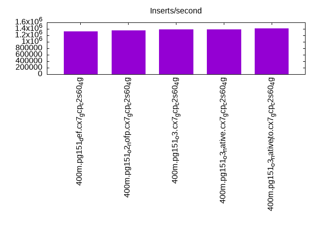
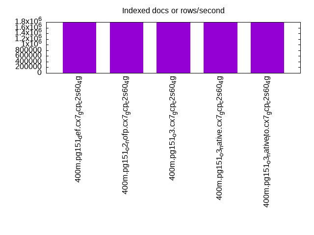
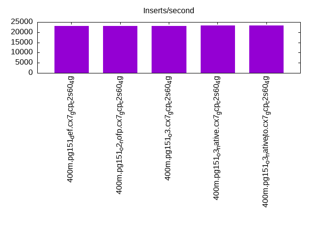
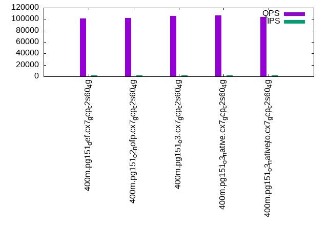
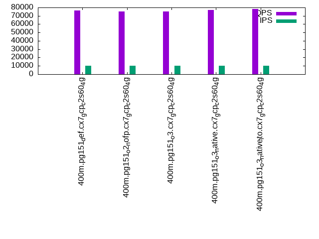
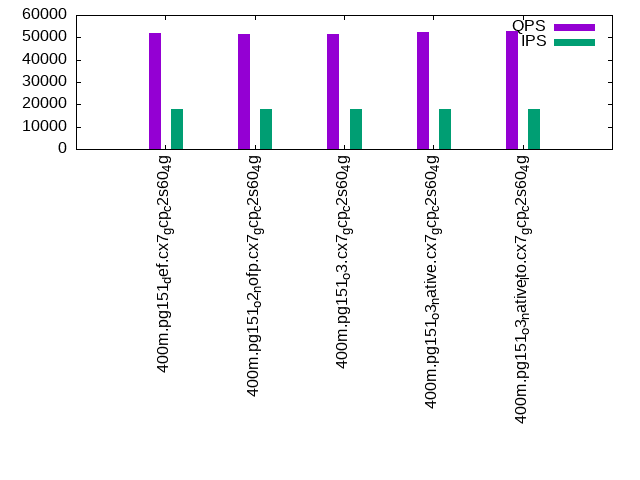

This is a report for the insert benchmark with 400M docs and 20 client(s). It is generated by scripts (bash, awk, sed) and Tufte might not be impressed. An overview of the insert benchmark is here and a short update is here. Below, by DBMS, I mean DBMS+version.config. An example is my8020.c10b40 where my means MySQL, 8020 is version 8.0.20 and c10b40 is the name for the configuration file.
The test server is a c2-standard-60 from GCP with 30 cores, hyperthreading disabled, 240G RAM and 3T from XFS and SW RAID 0 striped over 8 local NVMe drives. The benchmark was run with 20 clients and there were 1 or 2 connections per client (1 for queries, 1 for inserts). The benchmark loads 400M rows without secondary indexes, creates secondary indexes, loads another 400M rows then does 3 read+write tests for one hour each that do queries as fast as possible with 100, 500 and then 1000 writes/second/client concurrent with the queries. Each read-write test runs for 1800 seconds. The test was configured to use a table per client. The database fits in the OS page cache but not the DBMS buffer pool. Clients and the DBMS share one server. The per-database configs are in the per-database subdirectories here.
The tested DBMS are:
The numbers are inserts/s for l.i0 and l.i1, indexed docs (or rows) /s for l.x and queries/s for q*.2. The values are the average rate over the entire test for inserts (IPS) and queries (QPS). The range of values for IPS and QPS is split into 3 parts: bottom 25%, middle 50%, top 25%. Values in the bottom 25% have a red background, values in the top 25% have a green background and values in the middle have no color. A gray background is used for values that can be ignored because the DBMS did not sustain the target insert rate. Red backgrounds are not used when the minimum value is within 80% of the max value.
| dbms | l.i0 | l.x | l.i1 | q100.1 | q500.1 | q1000.1 |
|---|---|---|---|---|---|---|
| 400m.pg151_def.cx7_gcp_c2s60_4g | 1328904 | 1794170 | 23149 | 101472 | 76131 | 51721 |
| 400m.pg151_o2_nofp.cx7_gcp_c2s60_4g | 1346801 | 1786161 | 23024 | 102401 | 75492 | 51542 |
| 400m.pg151_o3.cx7_gcp_c2s60_4g | 1384083 | 1778222 | 23087 | 105991 | 75506 | 51326 |
| 400m.pg151_o3_native.cx7_gcp_c2s60_4g | 1379310 | 1778222 | 23208 | 106378 | 76973 | 52213 |
| 400m.pg151_o3_native_lto.cx7_gcp_c2s60_4g | 1418440 | 1794170 | 23237 | 103673 | 78098 | 52663 |
This lists the average rate of inserts/s for the tests that do inserts concurrent with queries. For such tests the query rate is listed in the table above. The read+write tests are setup so that the insert rate should match the target rate every second. Cells that are not at least 95% of the target have a red background to indicate a failure to satisfy the target.
| dbms | q100.1 | q500.1 | q1000.1 |
|---|---|---|---|
| pg151_def.cx7_gcp_c2s60_4g | 1977 | 9885 | 18090 |
| pg151_o2_nofp.cx7_gcp_c2s60_4g | 1976 | 9885 | 18045 |
| pg151_o3.cx7_gcp_c2s60_4g | 1977 | 9885 | 18054 |
| pg151_o3_native.cx7_gcp_c2s60_4g | 1976 | 9885 | 18118 |
| pg151_o3_native_lto.cx7_gcp_c2s60_4g | 1976 | 9885 | 18118 |
| target | 2000 | 10000 | 20000 |
l.i0: load without secondary indexes. Graphs for performance per 1-second interval are here.
Average throughput:
Insert response time histogram: each cell has the percentage of responses that take <= the time in the header and max is the max response time in seconds. For the max column values in the top 25% of the range have a red background and in the bottom 25% of the range have a green background. The red background is not used when the min value is within 80% of the max value.
| dbms | 256us | 1ms | 4ms | 16ms | 64ms | 256ms | 1s | 4s | 16s | gt | max |
|---|---|---|---|---|---|---|---|---|---|---|---|
| pg151_def.cx7_gcp_c2s60_4g | 59.032 | 39.786 | 1.110 | 0.029 | 0.029 | 0.014 | 0.001 | 1.118 | |||
| pg151_o2_nofp.cx7_gcp_c2s60_4g | 61.145 | 37.658 | 1.123 | 0.032 | 0.029 | 0.014 | 0.658 | ||||
| pg151_o3.cx7_gcp_c2s60_4g | 62.720 | 36.158 | 1.046 | 0.035 | 0.027 | 0.015 | 0.602 | ||||
| pg151_o3_native.cx7_gcp_c2s60_4g | 62.199 | 36.643 | 1.073 | 0.041 | 0.031 | 0.013 | 0.879 | ||||
| pg151_o3_native_lto.cx7_gcp_c2s60_4g | 62.800 | 36.164 | 0.951 | 0.042 | 0.029 | 0.014 | 0.001 | 1.136 |
Performance metrics for the DBMS listed above. Some are normalized by throughput, others are not. Legend for results is here.
ips qps rps rmbps wps wmbps rpq rkbpq wpi wkbpi csps cpups cspq cpupq dbgb1 dbgb2 rss maxop p50 p99 tag 1328904 0 693 7.7 9468.8 566.5 0.001 0.006 0.007 0.437 228028 58.9 0.172 13 38.3 103.4 NA 1.118 75417 10688 400m.pg151_def.cx7_gcp_c2s60_4g 1346801 0 633 8.2 9656.8 571.1 0.000 0.006 0.007 0.434 217310 59.9 0.161 13 38.3 103.3 NA 0.658 76514 12087 400m.pg151_o2_nofp.cx7_gcp_c2s60_4g 1384083 0 511 8.5 10007.9 589.8 0.000 0.006 0.007 0.436 208520 60.2 0.151 13 38.3 103.2 NA 0.602 79213 7592 400m.pg151_o3.cx7_gcp_c2s60_4g 1379310 0 572 8.1 9878.6 586.5 0.000 0.006 0.007 0.435 212848 58.7 0.154 13 38.3 103.2 NA 0.879 78548 5194 400m.pg151_o3_native.cx7_gcp_c2s60_4g 1418440 0 569 6.4 10019.6 598.7 0.000 0.005 0.007 0.432 222244 59.1 0.157 12 38.3 103.2 NA 1.136 81630 8390 400m.pg151_o3_native_lto.cx7_gcp_c2s60_4g
l.x: create secondary indexes.
Average throughput:
Performance metrics for the DBMS listed above. Some are normalized by throughput, others are not. Legend for results is here.
ips qps rps rmbps wps wmbps rpq rkbpq wpi wkbpi csps cpups cspq cpupq dbgb1 dbgb2 rss maxop p50 p99 tag 1794170 0 7668 253.5 5905.6 768.7 0.004 0.145 0.003 0.439 116576 20.2 0.065 3 73.5 194.9 NA 0.327 NA NA 400m.pg151_def.cx7_gcp_c2s60_4g 1786161 0 9916 252.4 5814.2 762.9 0.006 0.145 0.003 0.437 115986 19.9 0.065 3 73.5 195.2 NA 0.358 NA NA 400m.pg151_o2_nofp.cx7_gcp_c2s60_4g 1778222 0 9465 258.3 5982.3 757.7 0.005 0.149 0.003 0.436 114949 19.9 0.065 3 73.5 195.2 NA 0.240 NA NA 400m.pg151_o3.cx7_gcp_c2s60_4g 1778222 0 8811 264.8 5960.7 758.4 0.005 0.153 0.003 0.437 117728 19.5 0.066 3 73.5 195.2 NA 0.375 NA NA 400m.pg151_o3_native.cx7_gcp_c2s60_4g 1794170 0 10907 247.7 5809.0 752.0 0.006 0.141 0.003 0.429 117500 19.7 0.065 3 73.5 193.4 NA 0.156 NA NA 400m.pg151_o3_native_lto.cx7_gcp_c2s60_4g
l.i1: continue load after secondary indexes created. Graphs for performance per 1-second interval are here.
Average throughput:
Insert response time histogram: each cell has the percentage of responses that take <= the time in the header and max is the max response time in seconds. For the max column values in the top 25% of the range have a red background and in the bottom 25% of the range have a green background. The red background is not used when the min value is within 80% of the max value.
| dbms | 256us | 1ms | 4ms | 16ms | 64ms | 256ms | 1s | 4s | 16s | gt | max |
|---|---|---|---|---|---|---|---|---|---|---|---|
| pg151_def.cx7_gcp_c2s60_4g | 0.019 | 88.481 | 11.496 | 0.004 | 0.680 | ||||||
| pg151_o2_nofp.cx7_gcp_c2s60_4g | 0.006 | 88.351 | 11.639 | 0.004 | 0.513 | ||||||
| pg151_o3.cx7_gcp_c2s60_4g | 0.014 | 88.439 | 11.543 | 0.004 | 0.815 | ||||||
| pg151_o3_native.cx7_gcp_c2s60_4g | 0.011 | 88.588 | 11.397 | 0.004 | 0.777 | ||||||
| pg151_o3_native_lto.cx7_gcp_c2s60_4g | 0.010 | 88.628 | 11.358 | 0.004 | 0.467 |
Performance metrics for the DBMS listed above. Some are normalized by throughput, others are not. Legend for results is here.
ips qps rps rmbps wps wmbps rpq rkbpq wpi wkbpi csps cpups cspq cpupq dbgb1 dbgb2 rss maxop p50 p99 tag 23149 0 70228 722.5 62816.2 599.4 3.034 31.958 2.714 26.513 132287 12.1 5.714 157 163.3 258.2 0.0 0.680 1199 599 400m.pg151_def.cx7_gcp_c2s60_4g 23024 0 70792 727.7 62528.4 596.6 3.075 32.364 2.716 26.534 132095 12.1 5.737 158 163.3 258.2 0.0 0.513 1199 599 400m.pg151_o2_nofp.cx7_gcp_c2s60_4g 23087 0 70549 724.9 62686.9 598.0 3.056 32.151 2.715 26.523 132162 12.1 5.725 157 163.3 258.2 NA 0.815 1199 599 400m.pg151_o3.cx7_gcp_c2s60_4g 23208 0 70286 723.3 62986.1 600.5 3.028 31.914 2.714 26.495 132638 11.9 5.715 154 163.3 258.4 0.0 0.777 1199 599 400m.pg151_o3_native.cx7_gcp_c2s60_4g 23237 0 70603 727.2 63088.8 601.2 3.038 32.045 2.715 26.493 132829 11.8 5.716 152 163.3 258.6 NA 0.467 1199 600 400m.pg151_o3_native_lto.cx7_gcp_c2s60_4g
q100.1: range queries with 100 insert/s per client. Graphs for performance per 1-second interval are here.
Average throughput:
Query response time histogram: each cell has the percentage of responses that take <= the time in the header and max is the max response time in seconds. For max values in the top 25% of the range have a red background and in the bottom 25% of the range have a green background. The red background is not used when the min value is within 80% of the max value.
| dbms | 256us | 1ms | 4ms | 16ms | 64ms | 256ms | 1s | 4s | 16s | gt | max |
|---|---|---|---|---|---|---|---|---|---|---|---|
| pg151_def.cx7_gcp_c2s60_4g | 66.947 | 32.808 | 0.241 | 0.004 | nonzero | nonzero | nonzero | 0.291 | |||
| pg151_o2_nofp.cx7_gcp_c2s60_4g | 67.516 | 32.241 | 0.239 | 0.004 | nonzero | nonzero | 0.160 | ||||
| pg151_o3.cx7_gcp_c2s60_4g | 69.189 | 30.578 | 0.230 | 0.003 | nonzero | nonzero | nonzero | 0.390 | |||
| pg151_o3_native.cx7_gcp_c2s60_4g | 68.928 | 30.834 | 0.233 | 0.004 | nonzero | nonzero | nonzero | 0.283 | |||
| pg151_o3_native_lto.cx7_gcp_c2s60_4g | 67.554 | 32.194 | 0.246 | 0.005 | nonzero | nonzero | 0.178 |
Insert response time histogram: each cell has the percentage of responses that take <= the time in the header and max is the max response time in seconds. For max values in the top 25% of the range have a red background and in the bottom 25% of the range have a green background. The red background is not used when the min value is within 80% of the max value.
| dbms | 256us | 1ms | 4ms | 16ms | 64ms | 256ms | 1s | 4s | 16s | gt | max |
|---|---|---|---|---|---|---|---|---|---|---|---|
| pg151_def.cx7_gcp_c2s60_4g | 0.010 | 99.917 | 0.068 | 0.006 | 0.340 | ||||||
| pg151_o2_nofp.cx7_gcp_c2s60_4g | 0.007 | 99.938 | 0.056 | 0.169 | |||||||
| pg151_o3.cx7_gcp_c2s60_4g | 0.015 | 99.924 | 0.053 | 0.008 | 0.402 | ||||||
| pg151_o3_native.cx7_gcp_c2s60_4g | 0.013 | 99.947 | 0.039 | 0.001 | 0.266 | ||||||
| pg151_o3_native_lto.cx7_gcp_c2s60_4g | 0.004 | 99.896 | 0.099 | 0.001 | 0.473 |
Performance metrics for the DBMS listed above. Some are normalized by throughput, others are not. Legend for results is here.
ips qps rps rmbps wps wmbps rpq rkbpq wpi wkbpi csps cpups cspq cpupq dbgb1 dbgb2 rss maxop p50 p99 tag 1977 101472 87580 756.7 6347.0 71.5 0.863 7.636 3.211 37.039 473047 37.3 4.662 110 163.9 236.2 0.0 0.291 5130 4523 400m.pg151_def.cx7_gcp_c2s60_4g 1976 102401 83744 759.3 6344.4 71.3 0.818 7.593 3.211 36.977 474587 38.2 4.635 112 163.9 237.5 0.0 0.160 5210 4539 400m.pg151_o2_nofp.cx7_gcp_c2s60_4g 1977 105991 77477 768.1 6328.9 70.8 0.731 7.420 3.201 36.683 485013 39.4 4.576 112 163.9 237.4 0.0 0.390 5354 4361 400m.pg151_o3.cx7_gcp_c2s60_4g 1976 106378 82391 778.0 6356.0 72.4 0.775 7.489 3.217 37.522 490228 38.0 4.608 107 163.9 234.8 0.0 0.283 5434 4715 400m.pg151_o3_native.cx7_gcp_c2s60_4g 1976 103673 91287 779.2 6354.0 72.2 0.881 7.696 3.216 37.409 484610 36.2 4.674 105 163.9 233.7 0.0 0.178 5258 4667 400m.pg151_o3_native_lto.cx7_gcp_c2s60_4g
q500.1: range queries with 500 insert/s per client. Graphs for performance per 1-second interval are here.
Average throughput:
Query response time histogram: each cell has the percentage of responses that take <= the time in the header and max is the max response time in seconds. For max values in the top 25% of the range have a red background and in the bottom 25% of the range have a green background. The red background is not used when the min value is within 80% of the max value.
| dbms | 256us | 1ms | 4ms | 16ms | 64ms | 256ms | 1s | 4s | 16s | gt | max |
|---|---|---|---|---|---|---|---|---|---|---|---|
| pg151_def.cx7_gcp_c2s60_4g | 60.413 | 37.991 | 1.462 | 0.128 | 0.006 | nonzero | 0.075 | ||||
| pg151_o2_nofp.cx7_gcp_c2s60_4g | 60.056 | 38.332 | 1.477 | 0.129 | 0.006 | nonzero | 0.159 | ||||
| pg151_o3.cx7_gcp_c2s60_4g | 59.844 | 38.561 | 1.465 | 0.124 | 0.006 | nonzero | 0.105 | ||||
| pg151_o3_native.cx7_gcp_c2s60_4g | 60.529 | 37.894 | 1.445 | 0.126 | 0.005 | nonzero | 0.101 | ||||
| pg151_o3_native_lto.cx7_gcp_c2s60_4g | 61.129 | 37.305 | 1.435 | 0.125 | 0.006 | nonzero | 0.081 |
Insert response time histogram: each cell has the percentage of responses that take <= the time in the header and max is the max response time in seconds. For max values in the top 25% of the range have a red background and in the bottom 25% of the range have a green background. The red background is not used when the min value is within 80% of the max value.
| dbms | 256us | 1ms | 4ms | 16ms | 64ms | 256ms | 1s | 4s | 16s | gt | max |
|---|---|---|---|---|---|---|---|---|---|---|---|
| pg151_def.cx7_gcp_c2s60_4g | 0.011 | 92.315 | 7.673 | 0.001 | 0.320 | ||||||
| pg151_o2_nofp.cx7_gcp_c2s60_4g | 0.007 | 92.304 | 7.688 | nonzero | 0.305 | ||||||
| pg151_o3.cx7_gcp_c2s60_4g | 0.009 | 92.630 | 7.361 | 0.248 | |||||||
| pg151_o3_native.cx7_gcp_c2s60_4g | 0.006 | 92.257 | 7.736 | 0.001 | 0.299 | ||||||
| pg151_o3_native_lto.cx7_gcp_c2s60_4g | 0.007 | 92.189 | 7.803 | nonzero | 0.270 |
Performance metrics for the DBMS listed above. Some are normalized by throughput, others are not. Legend for results is here.
ips qps rps rmbps wps wmbps rpq rkbpq wpi wkbpi csps cpups cspq cpupq dbgb1 dbgb2 rss maxop p50 p99 tag 9885 76131 94227 898.4 29113.0 306.4 1.238 12.083 2.945 31.737 413098 36.6 5.426 144 167.4 236.7 0.0 0.075 4059 1949 400m.pg151_def.cx7_gcp_c2s60_4g 9885 75492 95018 898.7 29169.7 305.6 1.259 12.190 2.951 31.664 410696 36.6 5.440 145 167.4 236.6 0.0 0.159 4013 1982 400m.pg151_o2_nofp.cx7_gcp_c2s60_4g 9885 75506 95061 881.4 29354.4 306.8 1.259 11.953 2.970 31.779 411550 36.5 5.451 145 167.4 236.6 0.0 0.105 3980 1934 400m.pg151_o3.cx7_gcp_c2s60_4g 9885 76973 95457 898.8 29262.1 307.1 1.240 11.957 2.960 31.814 417911 35.9 5.429 140 167.5 236.6 0.0 0.101 4075 2014 400m.pg151_o3_native.cx7_gcp_c2s60_4g 9885 78098 95598 915.2 29129.0 306.7 1.224 11.999 2.947 31.773 422199 35.6 5.406 137 167.5 236.7 0.0 0.081 4141 1982 400m.pg151_o3_native_lto.cx7_gcp_c2s60_4g
q1000.1: range queries with 1000 insert/s per client. Graphs for performance per 1-second interval are here.
Average throughput:
Query response time histogram: each cell has the percentage of responses that take <= the time in the header and max is the max response time in seconds. For max values in the top 25% of the range have a red background and in the bottom 25% of the range have a green background. The red background is not used when the min value is within 80% of the max value.
| dbms | 256us | 1ms | 4ms | 16ms | 64ms | 256ms | 1s | 4s | 16s | gt | max |
|---|---|---|---|---|---|---|---|---|---|---|---|
| pg151_def.cx7_gcp_c2s60_4g | 53.594 | 41.966 | 3.823 | 0.576 | 0.040 | 0.058 | |||||
| pg151_o2_nofp.cx7_gcp_c2s60_4g | 53.589 | 41.942 | 3.848 | 0.583 | 0.038 | nonzero | 0.106 | ||||
| pg151_o3.cx7_gcp_c2s60_4g | 53.419 | 42.062 | 3.899 | 0.579 | 0.040 | nonzero | 0.088 | ||||
| pg151_o3_native.cx7_gcp_c2s60_4g | 53.659 | 41.942 | 3.791 | 0.569 | 0.040 | 0.061 | |||||
| pg151_o3_native_lto.cx7_gcp_c2s60_4g | 53.840 | 41.803 | 3.752 | 0.566 | 0.039 | nonzero | 0.076 |
Insert response time histogram: each cell has the percentage of responses that take <= the time in the header and max is the max response time in seconds. For max values in the top 25% of the range have a red background and in the bottom 25% of the range have a green background. The red background is not used when the min value is within 80% of the max value.
| dbms | 256us | 1ms | 4ms | 16ms | 64ms | 256ms | 1s | 4s | 16s | gt | max |
|---|---|---|---|---|---|---|---|---|---|---|---|
| pg151_def.cx7_gcp_c2s60_4g | nonzero | 82.890 | 17.109 | 0.001 | 0.302 | ||||||
| pg151_o2_nofp.cx7_gcp_c2s60_4g | 0.005 | 82.866 | 17.128 | 0.001 | 0.292 | ||||||
| pg151_o3.cx7_gcp_c2s60_4g | 0.002 | 82.812 | 17.185 | 0.001 | 0.303 | ||||||
| pg151_o3_native.cx7_gcp_c2s60_4g | nonzero | 82.821 | 17.179 | nonzero | 0.264 | ||||||
| pg151_o3_native_lto.cx7_gcp_c2s60_4g | 0.008 | 82.760 | 17.232 | nonzero | 0.284 |
Performance metrics for the DBMS listed above. Some are normalized by throughput, others are not. Legend for results is here.
ips qps rps rmbps wps wmbps rpq rkbpq wpi wkbpi csps cpups cspq cpupq dbgb1 dbgb2 rss maxop p50 p99 tag 18090 51721 96774 946.3 51667.1 531.0 1.871 18.734 2.856 30.058 362780 36.2 7.014 210 179.6 272.3 0.0 0.058 2701 1407 400m.pg151_def.cx7_gcp_c2s60_4g 18045 51542 96133 940.9 51657.4 533.1 1.865 18.694 2.863 30.250 360838 36.3 7.001 211 179.6 272.3 0.0 0.106 2685 1438 400m.pg151_o2_nofp.cx7_gcp_c2s60_4g 18054 51326 97048 946.6 51541.3 531.7 1.891 18.885 2.855 30.155 360041 36.2 7.015 212 179.6 272.3 0.0 0.088 2669 1422 400m.pg151_o3.cx7_gcp_c2s60_4g 18118 52213 97784 954.6 51814.5 530.2 1.873 18.722 2.860 29.968 365937 35.8 7.009 206 179.6 272.4 0.0 0.061 2733 1470 400m.pg151_o3_native.cx7_gcp_c2s60_4g 18118 52663 97753 956.4 51795.2 530.2 1.856 18.597 2.859 29.967 368048 35.4 6.989 202 179.6 272.2 0.0 0.076 2765 1422 400m.pg151_o3_native_lto.cx7_gcp_c2s60_4g
l.i0: load without secondary indexes
Performance metrics for all DBMS, not just the ones listed above. Some are normalized by throughput, others are not. Legend for results is here.
ips qps rps rmbps wps wmbps rpq rkbpq wpi wkbpi csps cpups cspq cpupq dbgb1 dbgb2 rss maxop p50 p99 tag 1328904 0 693 7.7 9468.8 566.5 0.001 0.006 0.007 0.437 228028 58.9 0.172 13 38.3 103.4 NA 1.118 75417 10688 400m.pg151_def.cx7_gcp_c2s60_4g 1346801 0 633 8.2 9656.8 571.1 0.000 0.006 0.007 0.434 217310 59.9 0.161 13 38.3 103.3 NA 0.658 76514 12087 400m.pg151_o2_nofp.cx7_gcp_c2s60_4g 1384083 0 511 8.5 10007.9 589.8 0.000 0.006 0.007 0.436 208520 60.2 0.151 13 38.3 103.2 NA 0.602 79213 7592 400m.pg151_o3.cx7_gcp_c2s60_4g 1379310 0 572 8.1 9878.6 586.5 0.000 0.006 0.007 0.435 212848 58.7 0.154 13 38.3 103.2 NA 0.879 78548 5194 400m.pg151_o3_native.cx7_gcp_c2s60_4g 1418440 0 569 6.4 10019.6 598.7 0.000 0.005 0.007 0.432 222244 59.1 0.157 12 38.3 103.2 NA 1.136 81630 8390 400m.pg151_o3_native_lto.cx7_gcp_c2s60_4g
l.x: create secondary indexes
Performance metrics for all DBMS, not just the ones listed above. Some are normalized by throughput, others are not. Legend for results is here.
ips qps rps rmbps wps wmbps rpq rkbpq wpi wkbpi csps cpups cspq cpupq dbgb1 dbgb2 rss maxop p50 p99 tag 1794170 0 7668 253.5 5905.6 768.7 0.004 0.145 0.003 0.439 116576 20.2 0.065 3 73.5 194.9 NA 0.327 NA NA 400m.pg151_def.cx7_gcp_c2s60_4g 1786161 0 9916 252.4 5814.2 762.9 0.006 0.145 0.003 0.437 115986 19.9 0.065 3 73.5 195.2 NA 0.358 NA NA 400m.pg151_o2_nofp.cx7_gcp_c2s60_4g 1778222 0 9465 258.3 5982.3 757.7 0.005 0.149 0.003 0.436 114949 19.9 0.065 3 73.5 195.2 NA 0.240 NA NA 400m.pg151_o3.cx7_gcp_c2s60_4g 1778222 0 8811 264.8 5960.7 758.4 0.005 0.153 0.003 0.437 117728 19.5 0.066 3 73.5 195.2 NA 0.375 NA NA 400m.pg151_o3_native.cx7_gcp_c2s60_4g 1794170 0 10907 247.7 5809.0 752.0 0.006 0.141 0.003 0.429 117500 19.7 0.065 3 73.5 193.4 NA 0.156 NA NA 400m.pg151_o3_native_lto.cx7_gcp_c2s60_4g
l.i1: continue load after secondary indexes created
Performance metrics for all DBMS, not just the ones listed above. Some are normalized by throughput, others are not. Legend for results is here.
ips qps rps rmbps wps wmbps rpq rkbpq wpi wkbpi csps cpups cspq cpupq dbgb1 dbgb2 rss maxop p50 p99 tag 23149 0 70228 722.5 62816.2 599.4 3.034 31.958 2.714 26.513 132287 12.1 5.714 157 163.3 258.2 0.0 0.680 1199 599 400m.pg151_def.cx7_gcp_c2s60_4g 23024 0 70792 727.7 62528.4 596.6 3.075 32.364 2.716 26.534 132095 12.1 5.737 158 163.3 258.2 0.0 0.513 1199 599 400m.pg151_o2_nofp.cx7_gcp_c2s60_4g 23087 0 70549 724.9 62686.9 598.0 3.056 32.151 2.715 26.523 132162 12.1 5.725 157 163.3 258.2 NA 0.815 1199 599 400m.pg151_o3.cx7_gcp_c2s60_4g 23208 0 70286 723.3 62986.1 600.5 3.028 31.914 2.714 26.495 132638 11.9 5.715 154 163.3 258.4 0.0 0.777 1199 599 400m.pg151_o3_native.cx7_gcp_c2s60_4g 23237 0 70603 727.2 63088.8 601.2 3.038 32.045 2.715 26.493 132829 11.8 5.716 152 163.3 258.6 NA 0.467 1199 600 400m.pg151_o3_native_lto.cx7_gcp_c2s60_4g
q100.1: range queries with 100 insert/s per client
Performance metrics for all DBMS, not just the ones listed above. Some are normalized by throughput, others are not. Legend for results is here.
ips qps rps rmbps wps wmbps rpq rkbpq wpi wkbpi csps cpups cspq cpupq dbgb1 dbgb2 rss maxop p50 p99 tag 1977 101472 87580 756.7 6347.0 71.5 0.863 7.636 3.211 37.039 473047 37.3 4.662 110 163.9 236.2 0.0 0.291 5130 4523 400m.pg151_def.cx7_gcp_c2s60_4g 1976 102401 83744 759.3 6344.4 71.3 0.818 7.593 3.211 36.977 474587 38.2 4.635 112 163.9 237.5 0.0 0.160 5210 4539 400m.pg151_o2_nofp.cx7_gcp_c2s60_4g 1977 105991 77477 768.1 6328.9 70.8 0.731 7.420 3.201 36.683 485013 39.4 4.576 112 163.9 237.4 0.0 0.390 5354 4361 400m.pg151_o3.cx7_gcp_c2s60_4g 1976 106378 82391 778.0 6356.0 72.4 0.775 7.489 3.217 37.522 490228 38.0 4.608 107 163.9 234.8 0.0 0.283 5434 4715 400m.pg151_o3_native.cx7_gcp_c2s60_4g 1976 103673 91287 779.2 6354.0 72.2 0.881 7.696 3.216 37.409 484610 36.2 4.674 105 163.9 233.7 0.0 0.178 5258 4667 400m.pg151_o3_native_lto.cx7_gcp_c2s60_4g
q500.1: range queries with 500 insert/s per client
Performance metrics for all DBMS, not just the ones listed above. Some are normalized by throughput, others are not. Legend for results is here.
ips qps rps rmbps wps wmbps rpq rkbpq wpi wkbpi csps cpups cspq cpupq dbgb1 dbgb2 rss maxop p50 p99 tag 9885 76131 94227 898.4 29113.0 306.4 1.238 12.083 2.945 31.737 413098 36.6 5.426 144 167.4 236.7 0.0 0.075 4059 1949 400m.pg151_def.cx7_gcp_c2s60_4g 9885 75492 95018 898.7 29169.7 305.6 1.259 12.190 2.951 31.664 410696 36.6 5.440 145 167.4 236.6 0.0 0.159 4013 1982 400m.pg151_o2_nofp.cx7_gcp_c2s60_4g 9885 75506 95061 881.4 29354.4 306.8 1.259 11.953 2.970 31.779 411550 36.5 5.451 145 167.4 236.6 0.0 0.105 3980 1934 400m.pg151_o3.cx7_gcp_c2s60_4g 9885 76973 95457 898.8 29262.1 307.1 1.240 11.957 2.960 31.814 417911 35.9 5.429 140 167.5 236.6 0.0 0.101 4075 2014 400m.pg151_o3_native.cx7_gcp_c2s60_4g 9885 78098 95598 915.2 29129.0 306.7 1.224 11.999 2.947 31.773 422199 35.6 5.406 137 167.5 236.7 0.0 0.081 4141 1982 400m.pg151_o3_native_lto.cx7_gcp_c2s60_4g
q1000.1: range queries with 1000 insert/s per client
Performance metrics for all DBMS, not just the ones listed above. Some are normalized by throughput, others are not. Legend for results is here.
ips qps rps rmbps wps wmbps rpq rkbpq wpi wkbpi csps cpups cspq cpupq dbgb1 dbgb2 rss maxop p50 p99 tag 18090 51721 96774 946.3 51667.1 531.0 1.871 18.734 2.856 30.058 362780 36.2 7.014 210 179.6 272.3 0.0 0.058 2701 1407 400m.pg151_def.cx7_gcp_c2s60_4g 18045 51542 96133 940.9 51657.4 533.1 1.865 18.694 2.863 30.250 360838 36.3 7.001 211 179.6 272.3 0.0 0.106 2685 1438 400m.pg151_o2_nofp.cx7_gcp_c2s60_4g 18054 51326 97048 946.6 51541.3 531.7 1.891 18.885 2.855 30.155 360041 36.2 7.015 212 179.6 272.3 0.0 0.088 2669 1422 400m.pg151_o3.cx7_gcp_c2s60_4g 18118 52213 97784 954.6 51814.5 530.2 1.873 18.722 2.860 29.968 365937 35.8 7.009 206 179.6 272.4 0.0 0.061 2733 1470 400m.pg151_o3_native.cx7_gcp_c2s60_4g 18118 52663 97753 956.4 51795.2 530.2 1.856 18.597 2.859 29.967 368048 35.4 6.989 202 179.6 272.2 0.0 0.076 2765 1422 400m.pg151_o3_native_lto.cx7_gcp_c2s60_4g
Insert response time histogram
256us 1ms 4ms 16ms 64ms 256ms 1s 4s 16s gt max tag 0.000 59.032 39.786 1.110 0.029 0.029 0.014 0.001 0.000 0.000 1.118 pg151_def.cx7_gcp_c2s60_4g 0.000 61.145 37.658 1.123 0.032 0.029 0.014 0.000 0.000 0.000 0.658 pg151_o2_nofp.cx7_gcp_c2s60_4g 0.000 62.720 36.158 1.046 0.035 0.027 0.015 0.000 0.000 0.000 0.602 pg151_o3.cx7_gcp_c2s60_4g 0.000 62.199 36.643 1.073 0.041 0.031 0.013 0.000 0.000 0.000 0.879 pg151_o3_native.cx7_gcp_c2s60_4g 0.000 62.800 36.164 0.951 0.042 0.029 0.014 0.001 0.000 0.000 1.136 pg151_o3_native_lto.cx7_gcp_c2s60_4g
TODO - determine whether there is data for create index response time
Insert response time histogram
256us 1ms 4ms 16ms 64ms 256ms 1s 4s 16s gt max tag 0.000 0.000 0.000 0.019 88.481 11.496 0.004 0.000 0.000 0.000 0.680 pg151_def.cx7_gcp_c2s60_4g 0.000 0.000 0.000 0.006 88.351 11.639 0.004 0.000 0.000 0.000 0.513 pg151_o2_nofp.cx7_gcp_c2s60_4g 0.000 0.000 0.000 0.014 88.439 11.543 0.004 0.000 0.000 0.000 0.815 pg151_o3.cx7_gcp_c2s60_4g 0.000 0.000 0.000 0.011 88.588 11.397 0.004 0.000 0.000 0.000 0.777 pg151_o3_native.cx7_gcp_c2s60_4g 0.000 0.000 0.000 0.010 88.628 11.358 0.004 0.000 0.000 0.000 0.467 pg151_o3_native_lto.cx7_gcp_c2s60_4g
Query response time histogram
256us 1ms 4ms 16ms 64ms 256ms 1s 4s 16s gt max tag 66.947 32.808 0.241 0.004 nonzero nonzero nonzero 0.000 0.000 0.000 0.291 pg151_def.cx7_gcp_c2s60_4g 67.516 32.241 0.239 0.004 nonzero nonzero 0.000 0.000 0.000 0.000 0.160 pg151_o2_nofp.cx7_gcp_c2s60_4g 69.189 30.578 0.230 0.003 nonzero nonzero nonzero 0.000 0.000 0.000 0.390 pg151_o3.cx7_gcp_c2s60_4g 68.928 30.834 0.233 0.004 nonzero nonzero nonzero 0.000 0.000 0.000 0.283 pg151_o3_native.cx7_gcp_c2s60_4g 67.554 32.194 0.246 0.005 nonzero nonzero 0.000 0.000 0.000 0.000 0.178 pg151_o3_native_lto.cx7_gcp_c2s60_4g
Insert response time histogram
256us 1ms 4ms 16ms 64ms 256ms 1s 4s 16s gt max tag 0.000 0.000 0.000 0.010 99.917 0.068 0.006 0.000 0.000 0.000 0.340 pg151_def.cx7_gcp_c2s60_4g 0.000 0.000 0.000 0.007 99.938 0.056 0.000 0.000 0.000 0.000 0.169 pg151_o2_nofp.cx7_gcp_c2s60_4g 0.000 0.000 0.000 0.015 99.924 0.053 0.008 0.000 0.000 0.000 0.402 pg151_o3.cx7_gcp_c2s60_4g 0.000 0.000 0.000 0.013 99.947 0.039 0.001 0.000 0.000 0.000 0.266 pg151_o3_native.cx7_gcp_c2s60_4g 0.000 0.000 0.000 0.004 99.896 0.099 0.001 0.000 0.000 0.000 0.473 pg151_o3_native_lto.cx7_gcp_c2s60_4g
Query response time histogram
256us 1ms 4ms 16ms 64ms 256ms 1s 4s 16s gt max tag 60.413 37.991 1.462 0.128 0.006 nonzero 0.000 0.000 0.000 0.000 0.075 pg151_def.cx7_gcp_c2s60_4g 60.056 38.332 1.477 0.129 0.006 nonzero 0.000 0.000 0.000 0.000 0.159 pg151_o2_nofp.cx7_gcp_c2s60_4g 59.844 38.561 1.465 0.124 0.006 nonzero 0.000 0.000 0.000 0.000 0.105 pg151_o3.cx7_gcp_c2s60_4g 60.529 37.894 1.445 0.126 0.005 nonzero 0.000 0.000 0.000 0.000 0.101 pg151_o3_native.cx7_gcp_c2s60_4g 61.129 37.305 1.435 0.125 0.006 nonzero 0.000 0.000 0.000 0.000 0.081 pg151_o3_native_lto.cx7_gcp_c2s60_4g
Insert response time histogram
256us 1ms 4ms 16ms 64ms 256ms 1s 4s 16s gt max tag 0.000 0.000 0.000 0.011 92.315 7.673 0.001 0.000 0.000 0.000 0.320 pg151_def.cx7_gcp_c2s60_4g 0.000 0.000 0.000 0.007 92.304 7.688 nonzero 0.000 0.000 0.000 0.305 pg151_o2_nofp.cx7_gcp_c2s60_4g 0.000 0.000 0.000 0.009 92.630 7.361 0.000 0.000 0.000 0.000 0.248 pg151_o3.cx7_gcp_c2s60_4g 0.000 0.000 0.000 0.006 92.257 7.736 0.001 0.000 0.000 0.000 0.299 pg151_o3_native.cx7_gcp_c2s60_4g 0.000 0.000 0.000 0.007 92.189 7.803 nonzero 0.000 0.000 0.000 0.270 pg151_o3_native_lto.cx7_gcp_c2s60_4g
Query response time histogram
256us 1ms 4ms 16ms 64ms 256ms 1s 4s 16s gt max tag 53.594 41.966 3.823 0.576 0.040 0.000 0.000 0.000 0.000 0.000 0.058 pg151_def.cx7_gcp_c2s60_4g 53.589 41.942 3.848 0.583 0.038 nonzero 0.000 0.000 0.000 0.000 0.106 pg151_o2_nofp.cx7_gcp_c2s60_4g 53.419 42.062 3.899 0.579 0.040 nonzero 0.000 0.000 0.000 0.000 0.088 pg151_o3.cx7_gcp_c2s60_4g 53.659 41.942 3.791 0.569 0.040 0.000 0.000 0.000 0.000 0.000 0.061 pg151_o3_native.cx7_gcp_c2s60_4g 53.840 41.803 3.752 0.566 0.039 nonzero 0.000 0.000 0.000 0.000 0.076 pg151_o3_native_lto.cx7_gcp_c2s60_4g
Insert response time histogram
256us 1ms 4ms 16ms 64ms 256ms 1s 4s 16s gt max tag 0.000 0.000 0.000 nonzero 82.890 17.109 0.001 0.000 0.000 0.000 0.302 pg151_def.cx7_gcp_c2s60_4g 0.000 0.000 0.000 0.005 82.866 17.128 0.001 0.000 0.000 0.000 0.292 pg151_o2_nofp.cx7_gcp_c2s60_4g 0.000 0.000 0.000 0.002 82.812 17.185 0.001 0.000 0.000 0.000 0.303 pg151_o3.cx7_gcp_c2s60_4g 0.000 0.000 0.000 nonzero 82.821 17.179 nonzero 0.000 0.000 0.000 0.264 pg151_o3_native.cx7_gcp_c2s60_4g 0.000 0.000 0.000 0.008 82.760 17.232 nonzero 0.000 0.000 0.000 0.284 pg151_o3_native_lto.cx7_gcp_c2s60_4g